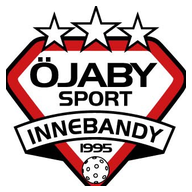

MatchcoachMatchklockan räknar upp från 00:00 till 15:00 per period (3 × 15 minuter). När du trycker ”IN” avslutas föregående femmas byte och den nya femman startar direkt. Pausa klockan vid avblåsningar om du vill mäta effektiv speltid.
Utvisningstiderna följer matchklockan. Vid mål får du bekräfta eventuell kvittning.
👥 Matchtrupp – före match
Välj vilka spelare som är uttagna till dagens match. Spelare som inte är med visas inte som val vid nya händelser eller byten. Dina sparade femmor behålls till nästa match.
Ändra helst truppen före matchstart.
⚡ Snabbcoach
Stora snabbknappar under matchen. Välj spelare eller registrera direkt på aktiv femma. Ångra senaste händelse vid feltryck.
🏑 Femmor och spelarbyten
⏱ Speltidsöversikt
Komplettera snabbregistrerade skott med spelare
Snabbbyte – en eller två spelare
Byt en eller två spelare samtidigt utan att stoppa femmans klocka. Speltiden sparas för spelaren som går ut och börjar räknas för den som går in. De sparade kedjorna ändras inte. När du väljer en hel femma återställs originaluppställningen.
Starta en femma för att göra ett spelarbyte.
Kedjor – ändra när du vill
Välj fem spelare per femma. Ändringar påverkar kommande byten, inte redan loggade. Samma spelare kan användas i olika femmor.
📅 Seriematcher 2026/27
Pantamera P Röd MellanSyd -11 · Öjaby Sport IBK P10-12/2. Välj match för att fylla i motståndare och datum. Ingen automatisk iBIS-synkning.
Matchhändelser
Plus/minus räknas bara vid mål i spel 5 mot 5. Mål i PP/BP registreras separat. Välj målskytt/assist vid mål framåt.
🎯 Skott och täckta skott
📋 Matchkontroll och liveanalys
Varningarna är visuella och stoppar inte klockan. Räknar bara medan matchklockan går.
✏️ Korrigera händelser
Välj en registrerad händelse och ändra uppgifterna eller ta bort den. Klockan påverkas inte.
📊 Femmorna just nu
| Femma | Speltid | Mål +/− | Skott | Täckta |
|---|
Händelser kopplas till femman som var aktiv när de registrerades. Statistik för specialfemmor visas också.
⏸️ Periodsammanfattning
💾 Säkerhet och återställning
Kontrollerar lokal lagring…
Säkerhetskopian innehåller aktuell match, trupp och säsongsarkiv. Spara filen i Filer/iCloud. Återställning ersätter lokala uppgifter efter bekräftelse.
👥 Trupp och målvakter
Alla spelare finns i truppen. Ändra namn, markera Målvakt och välj vilka som är med i dagens match. Målvakter visas i egen kolumn och ingår inte i utespelarnas kedjor eller speltidsvarningar. Spara ändringar före matchstart.
Utespelare
🥅 Målvakter
Utvisningar
Livevy – spelare på plan och bänk
0 på planenGrön = på planen. Speltid och antal byten uppdateras när matchklockan går. Stapeln jämför med spelaren som spelat mest. Tryck på en spelare på planen för att förvälja den som ska bytas ut.
På planen
På bänken
⚠️ Speltidsvarning
Jämför utespelarnas speltid. Varning visas när någon ligger minst vald tid efter medianen. Varningarna är ett stöd – backar och forwards kan ha olika speltid.
Översikt
Spelarnas statistik
| Spelare | Speltid | Byten | Mål | Assist | Skott på mål | Skott utanför | Täckta | +/- | Utv.min | Tekn. V | Tekn. F | Tekn. % |
|---|
Händelse- och byteslogg
| Period | Tid | Typ | Detaljer |
|---|
Matchen sparas automatiskt på den här enheten i samma webbläsare. Exportera JSON som säkerhetskopia. CSV kan öppnas i Excel.
📊 Kedjeanalys och spelarkemi
Gemensam speltid och målskillnad baseras på registrerade byten och mål i lika styrka. Femmor grupperas efter vilka fem spelare som faktiskt spelade tillsammans, även om ordningen ändras.
Femmor
| Spelare | Tid | Mål + | Mål − | Skillnad | Per 15 min |
|---|
Spelarpar
| Spelarpar | Tid tillsammans | Mål + | Mål − | Skillnad |
|---|
⏱️ Speltid per period
Tid baserad på registrerade byten. Speltiden mäts när matchklockan går och förutsätter att byten registreras i appen.
| Spelare | P1 | P2 | P3 | Totalt | Byten | Snittbyte |
|---|
🏆 Säsongsstatistik
Använd Avsluta match högst upp för att spara statistik och starta om matchtavlan. Du kan också spara manuellt här. Arkivet lagras på denna iPhone/webbläsare; exportera en säkerhetskopia regelbundet.
| Spelare | Matcher | Mål | Assist | Poäng | +/- | Speltid | Utv.min |
|---|
Sparade matcher
📄 Matchrapport och PDF
Tränaranteckningar
På iPhone: välj Skriv ut, öppna förhandsvisningen och dela sedan som PDF till Filer. Skrivarfunktionen använder Safaris inbyggda PDF-hantering.
📅 Träningsnärvaro
Tisdagar och torsdagar · samma spelartrupp som i Matchcoach. Registreringarna sparas på den här enheten.
📊 Närvarostatistik
| Spelare | Närvarande | Frånvarande | Anmält förhinder | Närvaro |
|---|
Närvaroprocent = närvarande / alla registrerade träningstillfällen. All frånvaro, även anmält förhinder, räknas som frånvaro. Endast sparade träningar ingår.
📈 Fördjupad matchanalys
Sammanställningar från registrerade matchhändelser. Endast seriematcher ingår i säsongsanalysen.
📋 Återanvänd matchuppställning
Spara trupp och åtta uppställningar lokalt. Att ladda en mall ändrar inte pågående statistik eller tidigare matcher.
🎯 Straffslag
Separat straffstatistik. Straffmål under matchtid räknas även i resultatet, men inte som vanligt skott eller plus/minus.